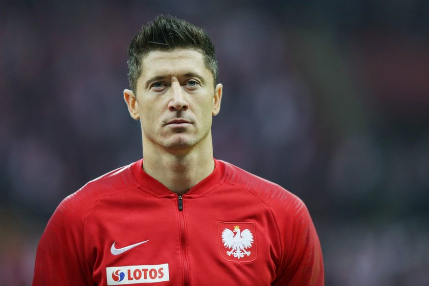
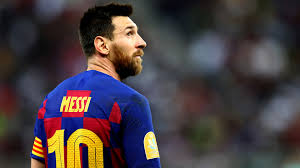
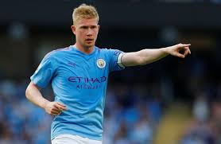

Ulubieni Zawodnicy
Cristiano Ronaldo
Robert Lewandowski
Leo Messi
Kevin De Bruyne




Cristiano Ronaldo portugalski piłkarz występujący na pozycji skrzydłowego lub napastnika we włoskim klubie Juventus oraz w reprezentacji Portugalii, której jest kapitanem.
Robert Lewandowski polski piłkarz występujący na pozycji napastnika w niemieckim klubie Bayern Monachium oraz w reprezentacji Polski, której jest kapitanem.
Leo Messi argentyński piłkarz występujący na pozycji napastnika w hiszpańskim klubie FC Barcelona, której jest kapitanem oraz w reprezentacji Argentyny, której także jest kapitanem.
Kevin De Bruyne belgijski piłkarz grający na pozycji pomocnika w angielskim klubie Manchester City. Uczestnik Mistrzostw Świata 2014 i 2018 oraz Mistrzostw Europy 2016.